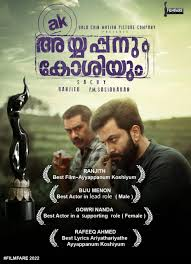
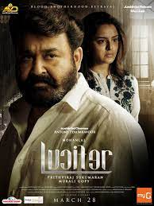

SPOTSTAR - ACTION

Malayalam action movies have undergone a significant transformation over the years, evolving from traditional fight sequences to more nuanced, character-driven storytelling. Today’s Malayalam action films are known for their realism, tightly written scripts, and powerful performances. Unlike over-the-top action seen in many other industries, Malayalam cinema often blends action with strong emotional depth and social relevance. Directors like Abrid Shine, Khalid Rahman, and Martin Prakkat have brought a fresh perspective to the genre. Films such as "Kalki," "Anjaam Pathiraa," and "Operation Java" showcase how action can be effectively woven into suspenseful and thrilling narratives. Action is no longer just about physical strength; it’s also about moral dilemmas, internal conflicts, and societal commentary. These films focus on gritty realism, intense character arcs, and stylish yet believable action sequences. Malayalam action heroes are not invincible; they are flawed, relatable, and grounded in reality. This adds layers to their journey and keeps audiences deeply engaged. With improving production values and the rise of pan-Indian appeal, Malayalam action cinema is gaining wider recognition. The blend of powerful storytelling and impactful action ensures that the genre remains both thrilling and meaningful.
POPULAR FILMS



